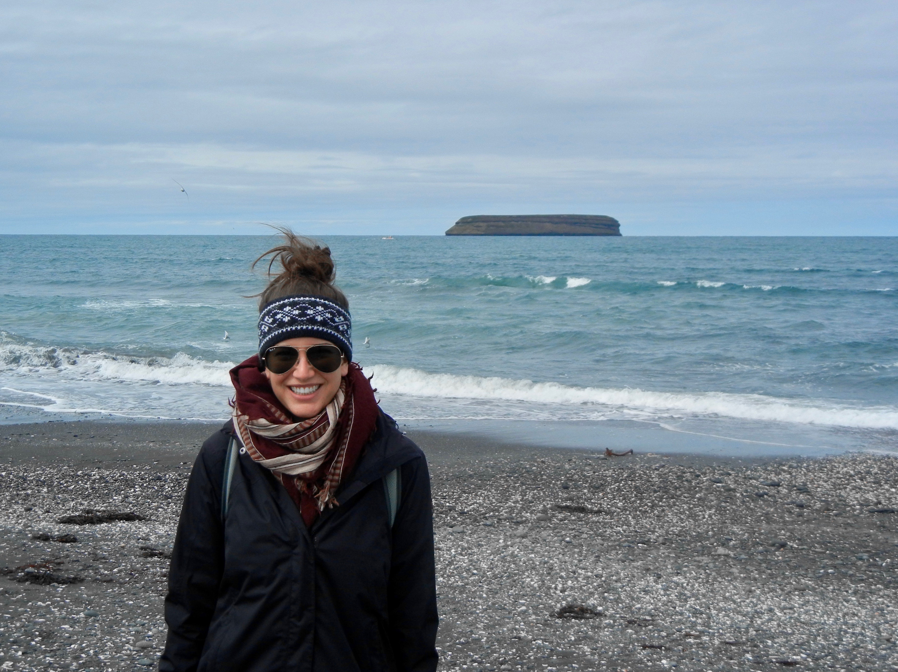

About
Work Stuff
I'm currently completing a 15 week intensive bootcamp in Software Engineering at Flatiron School in London, UK. I'm learning lots about Javascript, Ruby, HTML, CSS, React, Redux, Ruby on Rails, and more!
Previously, I worked in Financial Services consulting at EY LLP here in London. I got to do all sorts of cool stuff in this job like building a business model viability assessment tool, work on a credit risk model for a large European bank, and got my introduction to tech as a product manager for a couple different assets.
After I finish my course I would like to work in financial services, travel or health, and apply my newly discovered superpower (code) to any one of my passions.
Fun Stuff
I'm currently completing a 15 week intensive bootcamp in Software Engineering at Flatiron School in London, UK. I'm learning lots about Javascript, Ruby, HTML, CSS, React, Redux, Ruby on Rails, and more!
Previously, I worked in Financial Services consulting at EY LLP here in London. I got to do all sorts of cool stuff in this job like building a business model viability assessment tool, work on a credit risk model for a large European bank, and got my introduction to tech as a product manager for a couple different assets.
After I finish my course I would like to work in financial services, travel or health, and apply my newly discovered superpower (code) to any one of my passions.